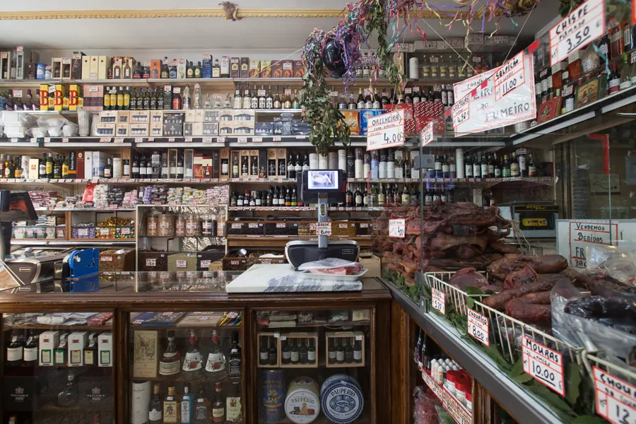
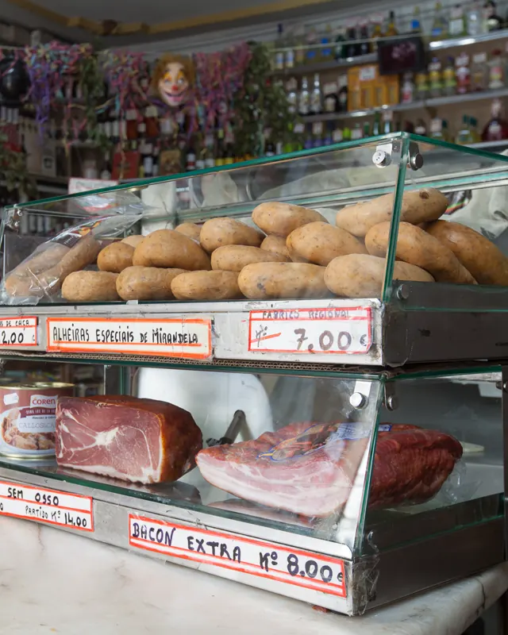
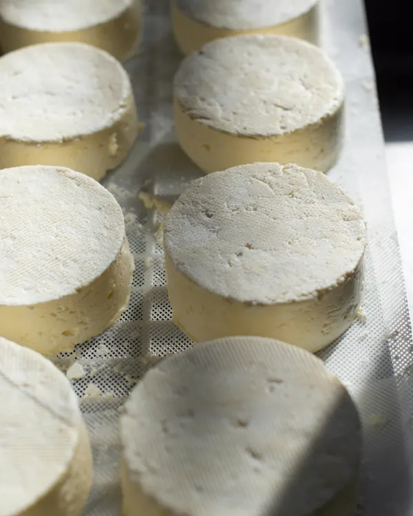
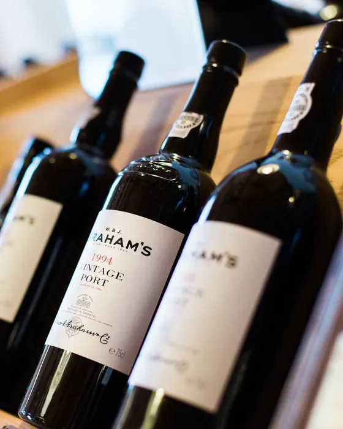
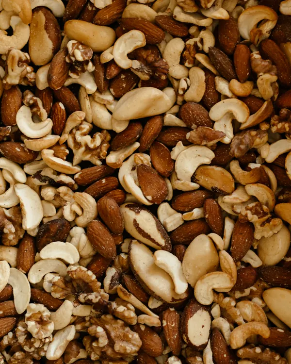
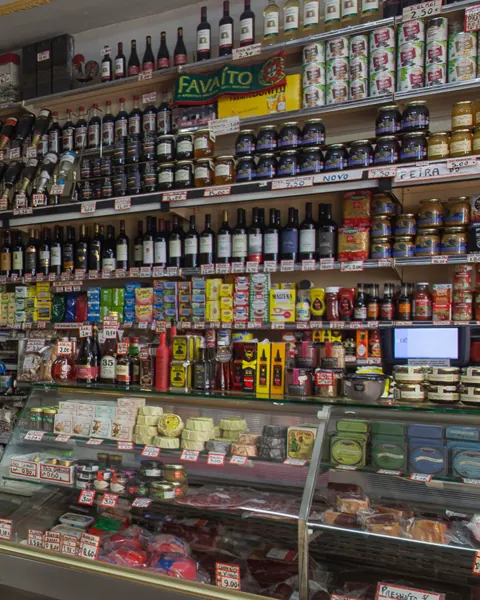
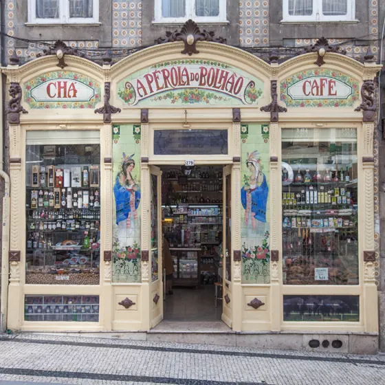
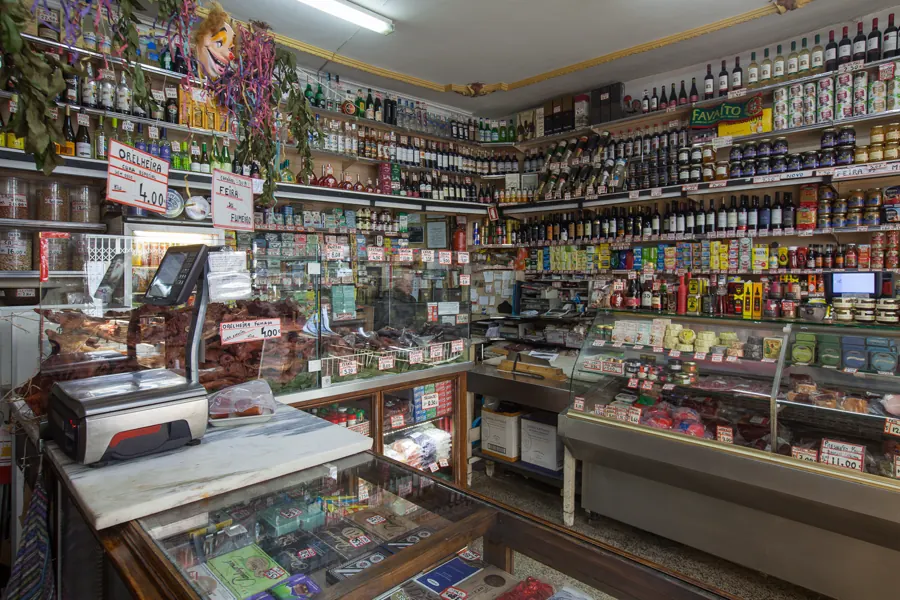

Loja Porto de Tradição
A mercearia da Rua Formosa, desde 1917.
Queijos, presunto, fumeiro, vinho do Porto e frutos secos, mesmo em frente ao Mercado do Bolhão.
Segunda a sábado, a partir das 9:00Do balcão para a sua mesa.
-

Presunto e enchidos Com alheiras de Mirandela e fumeiro regional.
-

Queijos regionais -

Vinho do Porto -

Frutos secos A granel, vendidos ao peso.
-

Azeite, compotas e conservas

A mesma casa, há mais de cem anos.
António Rodrigues Reis abriu-a para vender chá, café e especiarias. Os azulejos Arte Nova da fachada ainda o contam, e a loja continua na família.

Venha escolher ao balcão.
Rua Formosa, 2794000-252 Porto
- Segunda a sexta
- 9:00–13:00 · 14:00–19:00
- Sábado
- 9:00–13:00
- Domingo
- Fechado
Fecha a 1 e 8 de dezembro, na Sexta-feira Santa e na Páscoa.